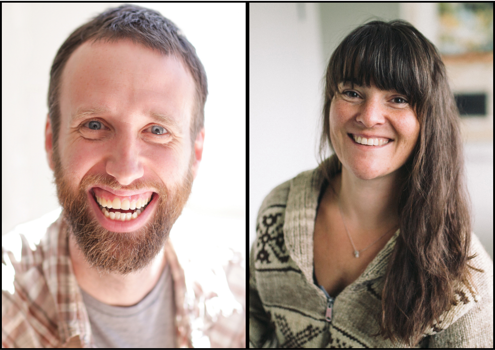
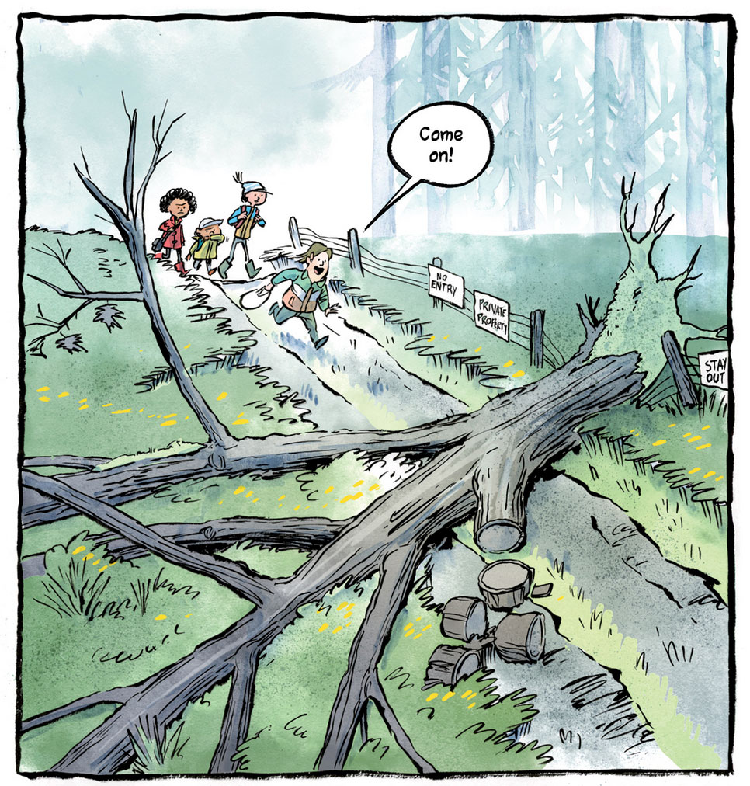

Sueño Bay is a fictional setting within the Sueño Bay Adventures series, but its forests, beaches, and Pacific Northwest scenes are based on the Gulf Islands of British Columbia, in particular Salt Spring Island.
Come for the mystery. Stay for the moon creatures.

Meet the Creators
Author and illustrator team Mike and Nancy Deas live with their family on Salt Spring Island. Mike has called Salt Spring home his whole life, while Nancy grew up on nearby Mayne Island and now calls Salt Spring home.

About the Series
The Sueño Bay Adventure Series follows friends Ollie, Kay, Jenna and Sleeves, an unlikely foursome, on a wild ride of adventures across Sueño Bay.
The magical and mysterious atmosphere of the real-life Gulf Islands heavily inspired the series' setting, complete with legendary moon creatures and hidden crystals.
Explore Sueño Bay
Follow the trail of the Sueño Bay adventures across Salt Spring Island. Each marker on the map points to a real-world location that closely matches a setting, landmark or moment from the adventures.